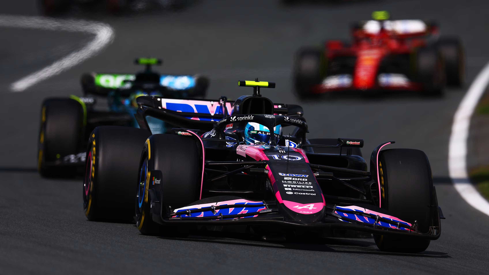
Dutch Grand Prix
Thrilling race at Zandvoort Circuit
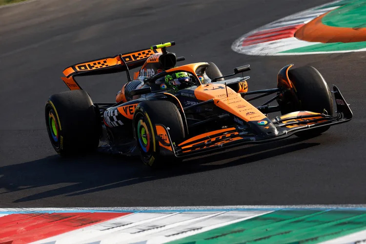
Italian Grand Prix
Speed and history at Monza
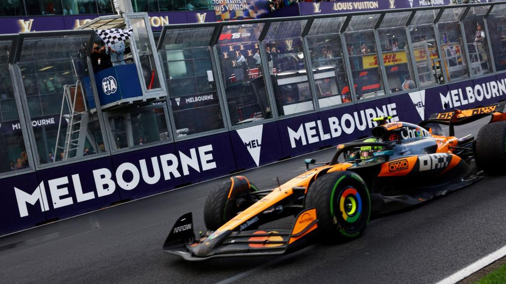
Australian Grand Prix
Excitement at Melbourne’s Albert Park
Round 1
The Australian Grand Prix at Melbourne’s Albert Park Circuit is a key Formula 1 race known for its fast straights, sharp corners, and unpredictable results. Traditionally the season opener, it attracts huge crowds and creates a vibrant motorsport atmosphere.
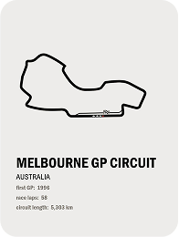
Round 2
Round 2, the Chinese Grand Prix at the Shanghai International Circuit, is known for its long back straight and challenging mix of high-speed and technical corners. The track often delivers dramatic overtakes and unpredictable race strategies.
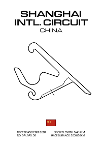
Round 3
The Japanese Grand Prix at Suzuka Circuit is a legendary race defined by its unique figure-eight layout and sweeping high-speed turns. Passionate fans and iconic corners like 130R make it one of the sport’s most revered events.
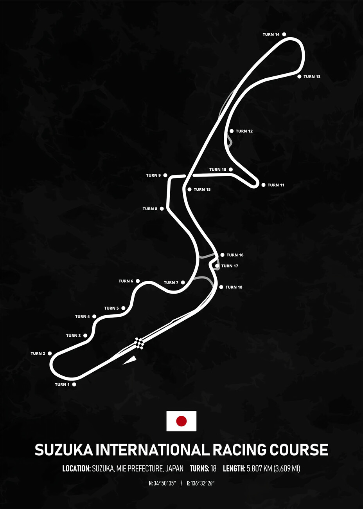
Round 4
The Bahrain Grand Prix at the Bahrain International Circuit is a night race famous for its long straights, heavy braking zones, and desert backdrop. Close racing and strategic battles often produce spectacular results.
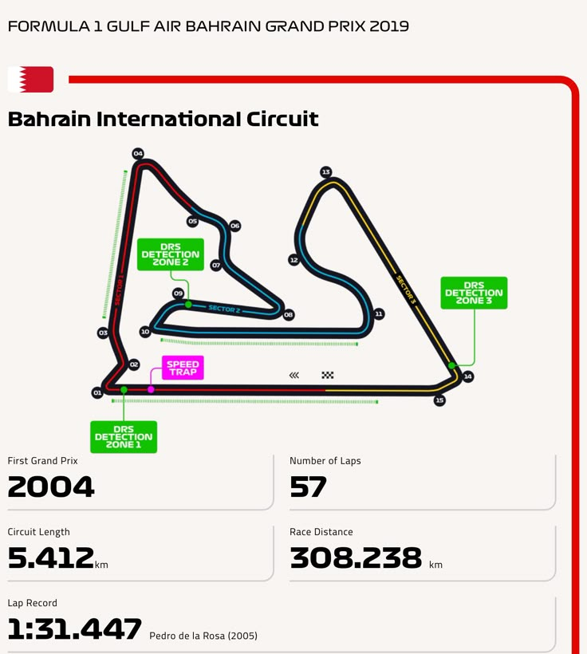
Round 5
The Saudi Arabian Grand Prix at Jeddah Corniche Circuit is a high-speed night race known for its narrow street layout, flowing corners, and dramatic racing under the lights. Its fast pace and unforgiving walls deliver constant tension and thrilling battles.
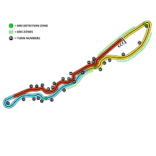
Round 6
The Miami Grand Prix at the Miami International Autodrome is set around Hard Rock Stadium and blends fast straights with tight technical sections. Its vibrant setting and unpredictable layout make it a modern fan favorite.
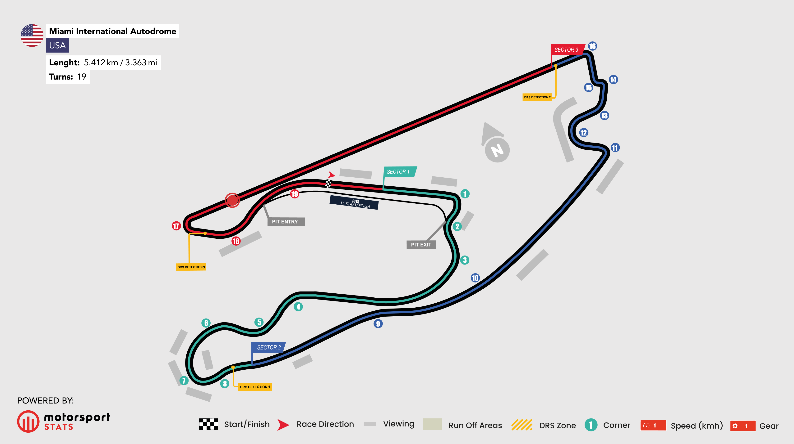
Round 7
The Emilia Romagna Grand Prix at Imola is a historic race on a challenging circuit with narrow sections and old-school corners. Its technical nature and rich history ensure exciting races steeped in tradition.
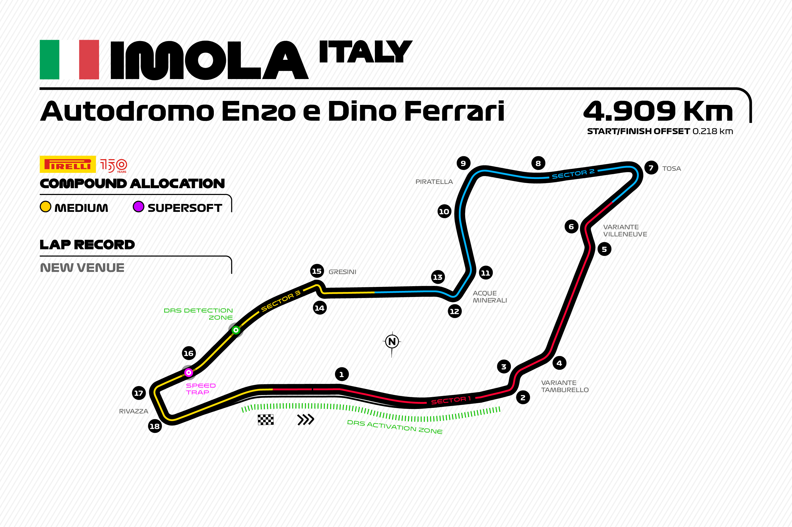
Round 8
The Monaco Grand Prix at Circuit de Monaco is the crown jewel of Formula 1, winding through the glamorous streets of Monte Carlo. Its tight corners, barriers, and historic prestige make it a unique and iconic challenge.
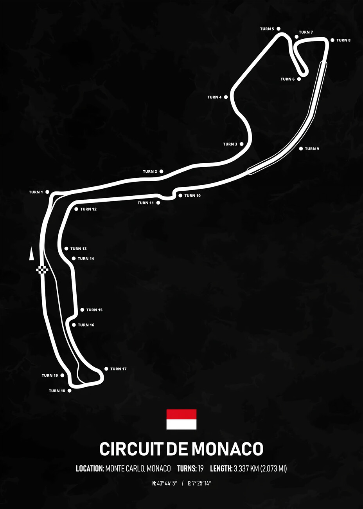
Round 9
The Canadian Grand Prix at Circuit Gilles Villeneuve is famed for its long straights, chicanes, and the notorious “Wall of Champions.” Unpredictable weather and passionate fans add to its electric atmosphere.
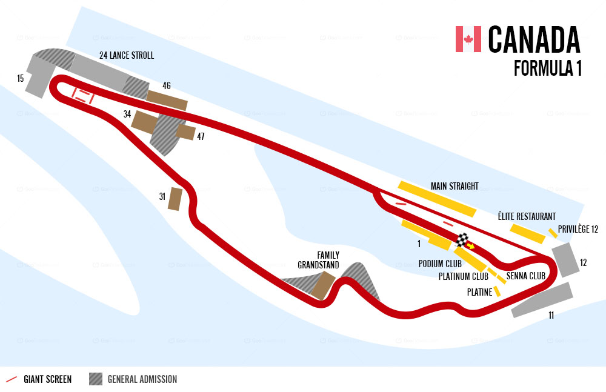
Round 10
The Spanish Grand Prix at Circuit de Barcelona-Catalunya is a well-balanced track with fast corners and technical sections. Known as a key testing venue, it often provides strategic battles and close competition.
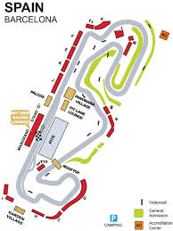
Round 11
The Austrian Grand Prix at the Red Bull Ring is set in the Styrian mountains and features fast straights, heavy braking zones, and elevation changes. Its short lap length produces close, action-packed racing.
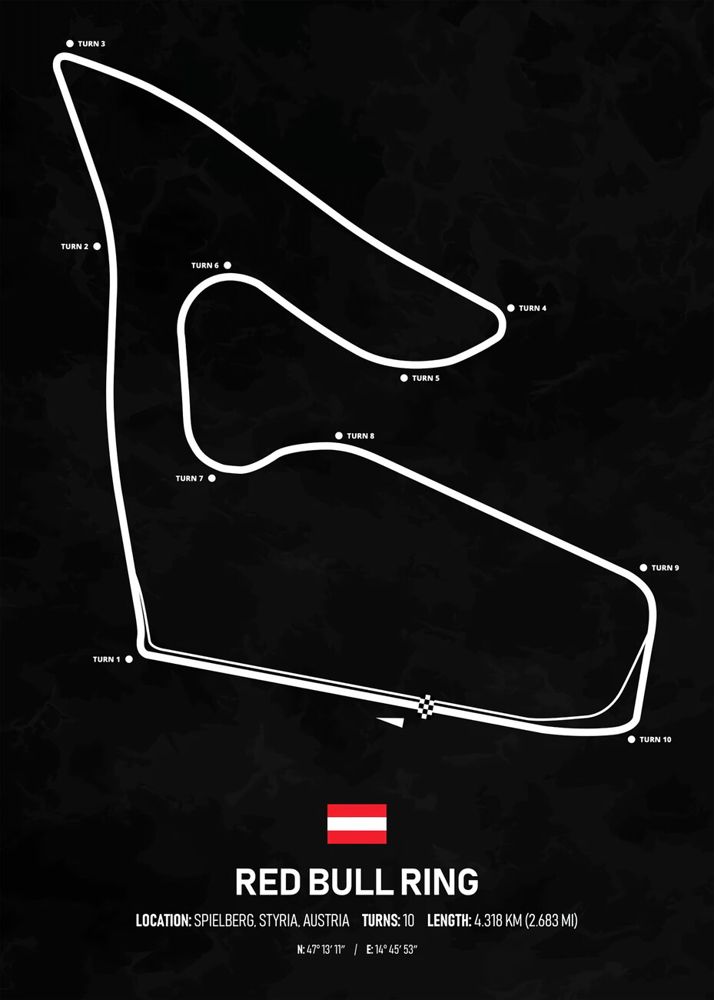
Round 12
The British Grand Prix at Silverstone Circuit is a cornerstone of Formula 1, with iconic high-speed corners like Maggotts and Becketts. Enthusiastic fans and rich history make it one of the sport’s greatest stages.
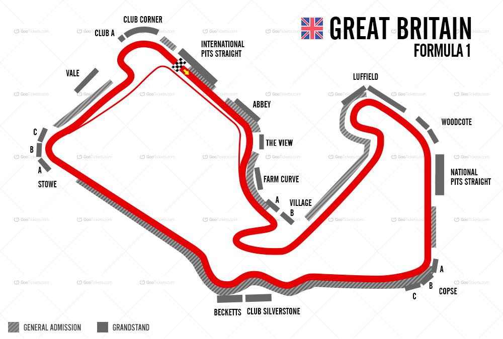
Round 13
The Belgian Grand Prix at Circuit de Spa-Francorchamps is one of the most iconic races, known for Eau Rouge, long straights, and unpredictable weather. Its mix of speed and technicality defines pure racing.
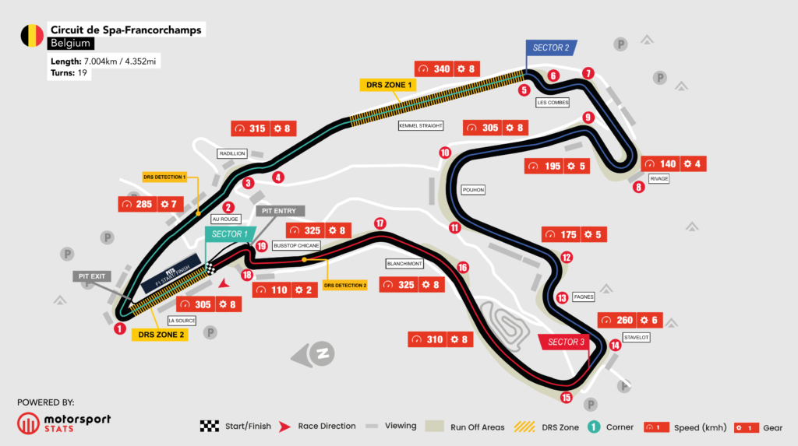
Round 14
The Hungarian Grand Prix at the Hungaroring is a tight, twisty circuit often compared to a karting track. Its limited overtaking spots create strategic battles and demand driver precision.
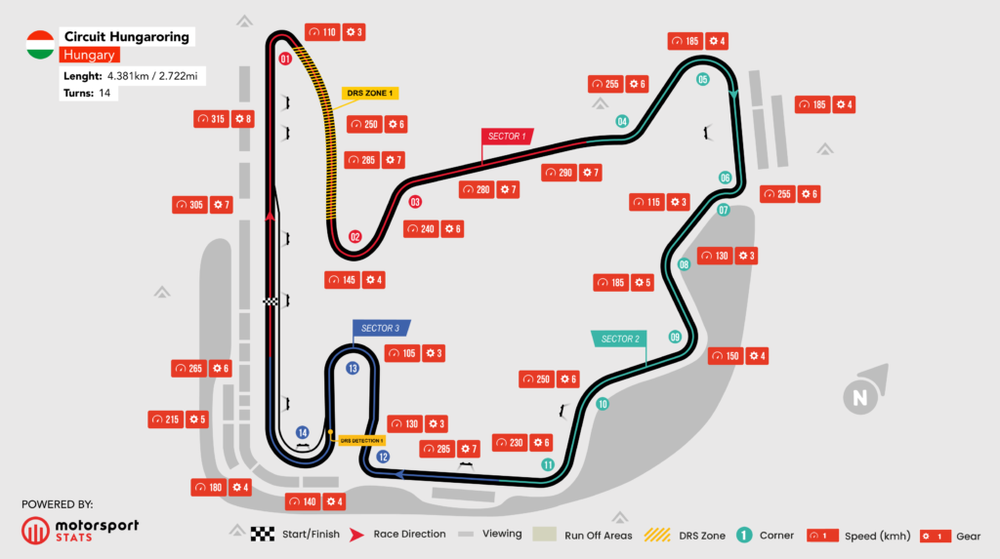
Round 15
The Dutch Grand Prix at Circuit Zandvoort is a high-speed, old-school track with steep banking and flowing corners. Orange-clad fans create an electric atmosphere by the seaside.
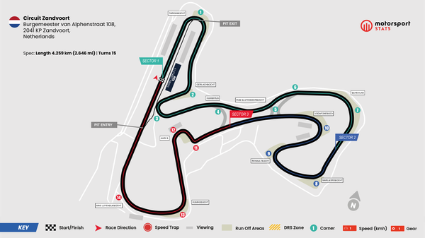
Round 16
The Italian Grand Prix at Monza is the “Temple of Speed,” featuring long straights and heavy braking zones. Its passionate tifosi and historic prestige make it one of Formula 1’s most iconic venues.
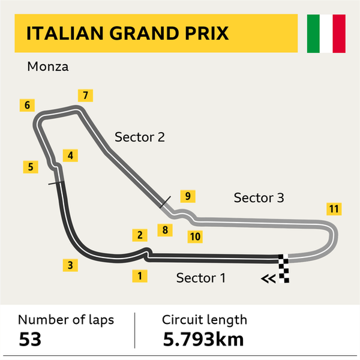
Round 17
The Azerbaijan Grand Prix at Baku City Circuit combines tight street sections with one of the longest straights in Formula 1. Its unpredictable races often deliver drama and surprise winners.
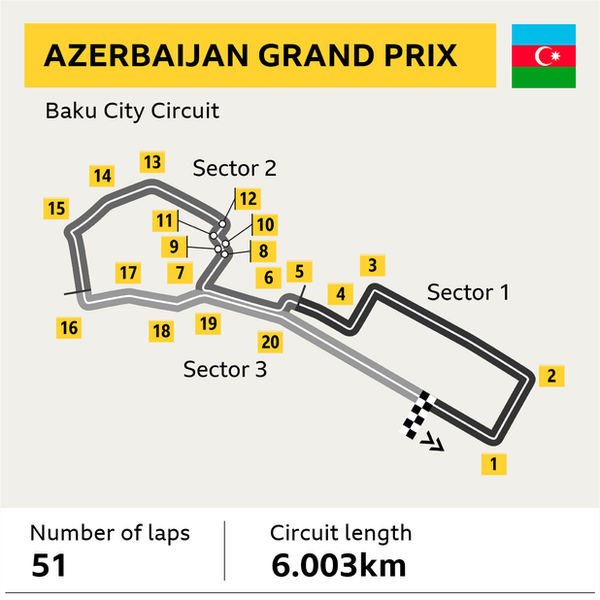
Round 18
The Singapore Grand Prix at Marina Bay Street Circuit is Formula 1’s original night race, known for its humidity, tight corners, and physical demands. The city skyline backdrop adds to its unique spectacle.
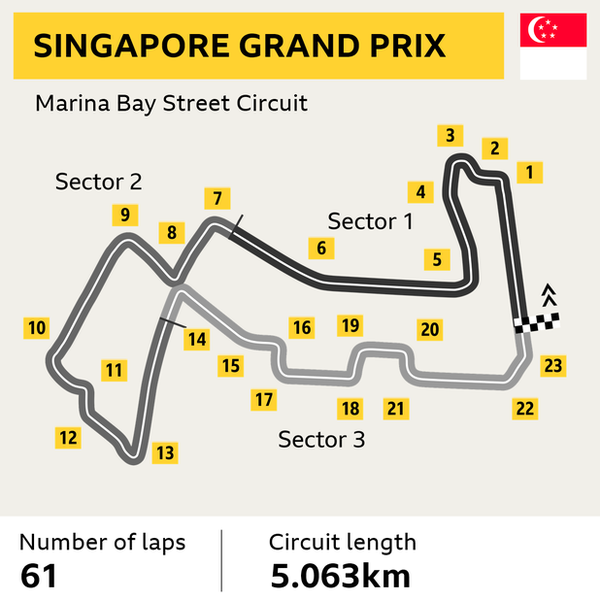
Round 19
The United States Grand Prix at Circuit of the Americas in Austin blends fast straights with sweeping corners inspired by legendary circuits. Its festive atmosphere makes it a modern classic.
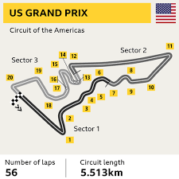
Round 20
The Mexican Grand Prix at Autódromo Hermanos Rodríguez is famous for its high altitude and passionate fans. The stadium section creates a thrilling atmosphere as cars roar past thousands of spectators.
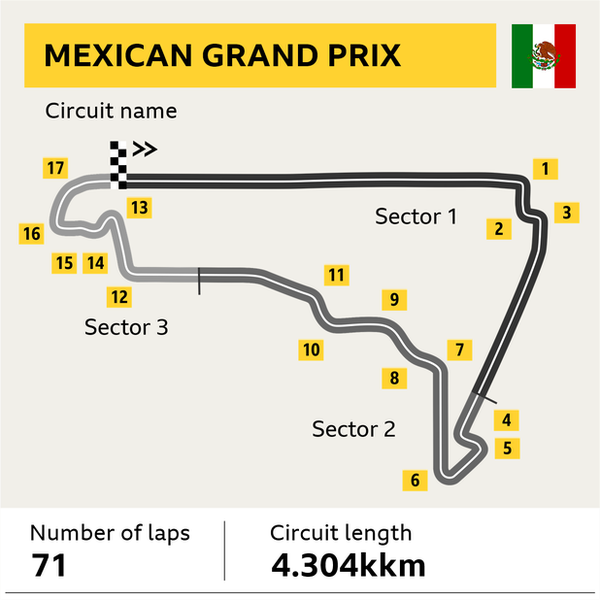
Round 21
The Brazilian Grand Prix at Interlagos is a short, undulating track that often produces thrilling battles and unpredictable weather. Its history and passionate fans make it a beloved venue.
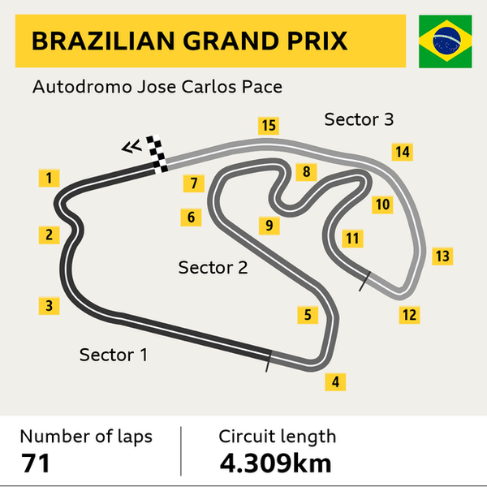
Round 22
The Las Vegas Grand Prix at the Las Vegas Strip Circuit is a glamorous night race along the city’s iconic landmarks. Its long straights and lively atmosphere bring a unique entertainment spectacle.
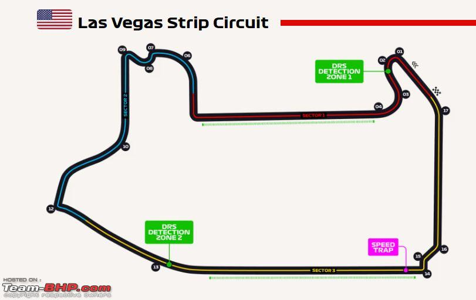
Round 23
The Qatar Grand Prix at Lusail International Circuit is a floodlit race with sweeping corners and smooth asphalt. It demands precision and consistency, offering unique night-race challenges.
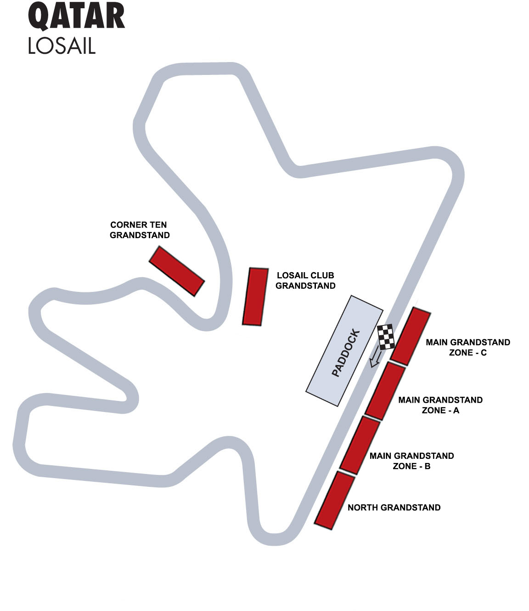
Round 24
The Abu Dhabi Grand Prix at Yas Marina Circuit closes the season with a twilight setting and modern layout. Its mix of technical sections and long straights makes it a dramatic championship finale.
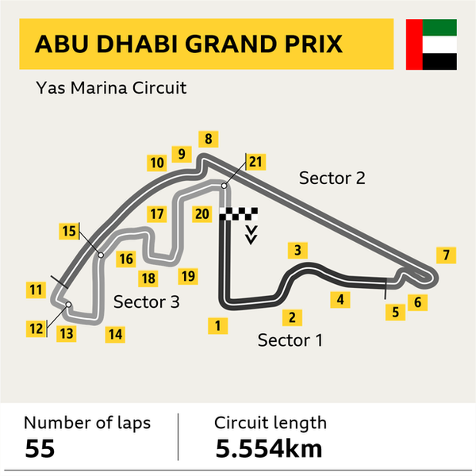